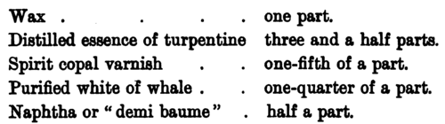

Encaustic Painting. Part 5
Description
This section is from the book "Mural Painting", by F. Hamilton Jackson. Also available from Amazon: Mural Painting: -1904.
Encaustic Painting. Part 5
Venice turpentine . . one part.
Thin amber . . . two parts.
Volatile oil of resin distilled . one part.
]£l&ni resin . . . half a part.
Allowed to dry for six or eight days; then the joints and the larger cavities were filled with a mastic made thus:—
Litharge . . 20 grammes.
White lead calcined, in powder 20 „ Umber . 15 „.
Talc or Terre k J&us .20 mixed with 500 grammes of linseed oil. These substances were boiled on a gentle fire for two hours with frequent stirring until the oil did not blacken. Foam appeared, and when it became rare and red the cooking was done. It was then allowed to settle, and was drawn off clear. (N.B.—The older this mastic is the * better.) The smaller cavities were filled with another mastic, for which the receipt is not given, and all was allowed to dry till the mastic had become very hard. These operations completed, the priming colour was mixed with flake white in powder stiff enough to trowel it, and it was thus spread on the wall, so as to get as smooth and even a surface as possible. Where it was necessary to add mastic it was done with thin layers and at intervals, so as to make sure of its getting dry through and thus avoiding cracks and warpings. It took a fortnight to dry, and was then brushed over with picture gluten, or medium, white being mixed with it, but not to such stiffness as to prevent the brush being used.
Fresco by Raffaelle^ from the Sala di Costantino, in the Vatican.
This picture medium was made thus:
The medium used in 1849 by M. Picot was slightly different:
The whole was melted in a bain-marie in a glazed earthenware pot. It was used on fresh plaster.
This priming was allowed to dry for seven or eight days, and then a second coat was spread bit by bit and dabbed while wet so as to obtain a roughened surface. It is advantageous to allow such a ground a long time to dry.
Hittorff quotes from Fernbach an account of how some of the paintings at Munich were done, commencing with the building of the inner wall with an air space of several inches between it and the wall of the palace. The preparation of the wall up to the completion of the plastering is the same as described previously, but the detail of the opening of the windows when fine to assist the drying, and keeping them shut in wet or foggy weather, marks the northern climate and the corresponding difficulties of the mural painter. The gluten was thus made: into a pot 1*50 kiL of wax cut into little slices was put, and 7*50 kil. of spirits of turpentine (not rectified) added; they were left for a day to dissolve, and then 0*875 kil. of Venice turpentine was mixed in. The mixture was carefully warmed to avoid its catching light, and the wall heated with a portable stove. To the warm wall the gluten was applied with a brush carefully and equally; 9 to 10 kils. of it covered about 150 square feet. A thick solution of amber, in the proportion of one-third, was then added, and the mixture passed over the still warm wall, so that it penetrated well. The hand furnace was kept two feet away from the wall, and any blisters were knocked off, the place filled up with plaster in thin coats, and then finished with the wax.
The first priming of colour was composed of 2 kiL of flake white and 0*50 kiL of white chalk, mixed with 0*625 kil. of a thick solution of amber thinned with 0125 kiL of poppy oil, to which 0*50 kil. of the wax gluten was added. All these substances were put together in a pot, then ground on a slab of marble, thinning them a little with spirits of turpentine. The colour was carefully applied with a large brush from top to bottom of the wall, following with a dry brush to make the surface smooth and uniform. On this surface, when quite dry, the last coat of wax and turpentine, mixed with a little amber, was applied about a fortnight before the paintings were commenced. The colours were mixed with amber, wax, and india-rubber, together with the wax gluten; and six months or a year after the completion of the painting the surface was finished with wax and " inustion." The wax used was very old, and was treated for twenty-four hours to soften it; 1*50 kil. of it was then put into a glazed pot with 0*38 kil. of Venice turpentine. On the day it was to be used it was warmed in a bain-marie till it was clear and warm to the hand; it was then applied with a three-inch brush decidedly and smoothly without retouching. Forty-eight hours later another similar coat was given, and after another twenty-four or forty-eight a third. It was left for three days, and then the " inustion " was done with the portable furnace, and after another three or four days the surface was gently polished.
Mrs. Merrifield describes a mode of painting which she saw in use by a Parmesan painter, in which the medium was wax and resin dissolved in spirits of turpentine, which may serve as transition to the processes in which heat is not made use of. The mixture was fluid and of the colour of milk. The colours were ground in it and kept in small glasses' floated with spirits of turpentine and covered with a leather cover to keep out air and dust. All colours could be used indiscriminately with this medium, even prussian blue and orpiment. The ground was the usual plaster, and the painting was done on it, when quite dry, without any further preparation. The colours were diluted with turpentine and dried rapidly.
Note
The colours used by the ancients have been discussed in this chapter, and a similar note upon those in use in the Middle Ages, from the data furnished by Theophilus, Jehan le Begue, and Cennino Cennini, may be of interest To begin with black and white. Black was made from the same materials as are used now, with the addition of burnt bone and ivory. The black earth of Rome and of Venice is mentioned in treatises on fresco, but is not any longer used. A caution may be given as to the effect which some blacks have upon pigments with which they may be mixed. Charcoal black decolorises organic pigments by precipitating their particles; and ivory black and colours allied to it do this in a greater, and lamp-black in a less, degree. M£rim6e says that well calcined and washed lamp-black may be used without danger. The fresco white, lime, was called Bianco San Giovanni, and white lead was variously known as Biacca and Cerusa, the " psimmithin" of the ancients. Theophilus confines its use to plaster-work, wood, or canvas. It is the only white pigment of the Lucca MS. and of the Hermeneia, except the lime for wall-painting; but calcined bones were sometimes used as well as pounded eggshells. The yellows were yellow ochre, a natural earth, auripig-mentum, orpiment, not the colour now known by that name, but a pale yellow, king's yellow, which is a yellow sulphide of arsenic. Since it can be mixed with no colour containing lead or copper, a white made from calcined stags' horns was used to lighten it. Massicot is a pale yellow, a protoxide of lead produced during the combustion of lead in the preparation of minium. Mrs. Herringham thinks this may be the " arzica" of Cennini, since in Spain it is called azarcon. Hendrie, however, says that is Theophilus' "flavus color," burnt ceruse. The red opiment, called by Cennini " risalgallo," was known to Theophilus as 4 i sandaracha," the Zarnichahmer of the Arabs. This fine colour, though difficult to make use of, is permanent upon ochres and when kept from contact with other colours. Another yellow used was Naples yellow, called by Cennini " giallorino," an anti-moniate of lead, believed by him to be a native mineral of volcanic origin. The term " sinopia " or " sinopis " includes all bright red ochreous earths. These red earths are extraordinarily permanent upon plaster. The modern Venetian reds are often artificial and seldom free from soluble salts and sulphates. The sinopis varied considerably in colour, and is sometimes used for a colour like Indian red—the trit-oxide. Pliny shows the same inaccuracy in his description of this colour, if the "usta," without which shadows could not be made, refers to it, as seems probable. A factitious bright sinoper was also used, called "rubeum," and "amatito," haematite, is another name for the ferric oxides which supply us with Indian red and other ochres, of which a hard, crystalline variety seems to have been known to fresco painters, which was very crimson in tint. Vasari mentions matita dura, which, when ground, was to be used with matita rossa. Mrs. Merrifield found that specimens from Roche, in Cornwall, calcined, varied in colour from lake to violet, according to the length of time they were in the fire. Cennini says it makes the colour of cardinals' dresses, which at that period was purple. " Cenobrium," cinnabar, is our vermilion, a sulphuret of mercury. It was also called minium, and this name was passed on the red lead, because the more costly material was often adulterated with it. Pliny says of the true minium, which was brought to Rome from Spain, forming part of the revenues of the Roman people: " Indeed there is nothing guarded with a more constant circumspection, for it is not allowable to reduce and refine the ore upon the spot, it being brought to Rome in a crude state and under seal, to the amount of 2,000 lbs. per annum. At Rome the process of washing is performed, and in the sale of it the price is regulated by statute, not being allowed to exceed seventy sesterces per pound." Red arsenic and red ochres were also used to adulterate it. The earliest clear account of the process of making vermilion artificially is given in the Lucca MS. (ascribed to the eighth century). The crystalline red form is identical in composition with the black amorphous sulphide of mercury, and sunlight has the effect of changing red into black. When the colour is locked up with oil and varnish this change does not take place, and judging from tempera pictures the medium used in them also protects it. It has also lasted in frescoes in rooms. In ancient treatises the. context is necessary to identify any pigment named, on account of the loose way in which terms were used. In later northern writings, for instance, sinopia means madder. " Vermiculum " generally means kermes lake, and a hard red ochre is sometimes called " cinnabar," a word which, to the Greeks, meant vermilion, but to Pliny dragon's blood. This last is the resin of various plants, especially Draccena draco, the dragon tree of Teneriffe. " Lacca " means lake; the pinks and crimsons of the early Italians have not yet been identified, but the raw materials were kermes (coccus Ulicis), gum lac, and "Verzino" (brazilwood). The use of balsams appears to prevent the fading of lakes which have been considered as hopelessly fugitive. "Folium" appears to have been a general term for vegetable reds and red purples, and also for vegetable blues. From a passage in Peter of S. Audemar it may be identified with our madder. Other vegetable colours used, which must have proved very fugitive, were "safferano" (saffron), " manisch " (a tender violet colour made from the juice of the elder berries), "succus" (a green made from the sap of various plants), and " indicum" (indigo). The introduction of the last gradually put an end to the culture of woad (isatis tinctoria). " Viridis," or " verde terra," was the green earth, of which the best came from Verona. "Verde azurro" was a carbonate of copper, the chrysocolla of Pliny, green verditer; it is blackened by sulphur. " Verde rame," verdigris, is an acetate of copper, which can only be used in a spirit or turpentine varnish; when used for manuscripts it was tempered with wine alone. "Prasinus" appears to have been the same thing, but was certainly used for wall-painting. The blues were " Lazur," or " Azurro della magna," the male cyanus of the Greeks, a native carbonate of copper (perhaps Pliny's "armenium," mountain blue or blue verdi-ter); and "Azurro oltremarine," true ultramarine. Some think that this was the " cyanus " of the Romans; but there is no certainty either way. Though exceedingly expensive always, its power and covering capacity are so great, and the beauty of its colour so extreme, that it has been much used.. In Le Begue's MS. it is said to be worth its weight in gold; the best now costs, retail, twice its weight in gold! In Cennini's time the stones cost two to five ducats (twenty to fifty shillings) the pound, and the German blue sixpence to one shilling and threepence; and the best ultramarine was worth fifty shillings the ounce, and the German ten to thirty shillings the pound. Sometimes an unscrupulous miniaturist would scrape it off from the backgrounds of miniatures to use again.

THE ECSTASY OF S. CATHERINE OF SIENA.
Fresco by Sodom a, in her chapel, S. Domenico, Siena.
Continue to: